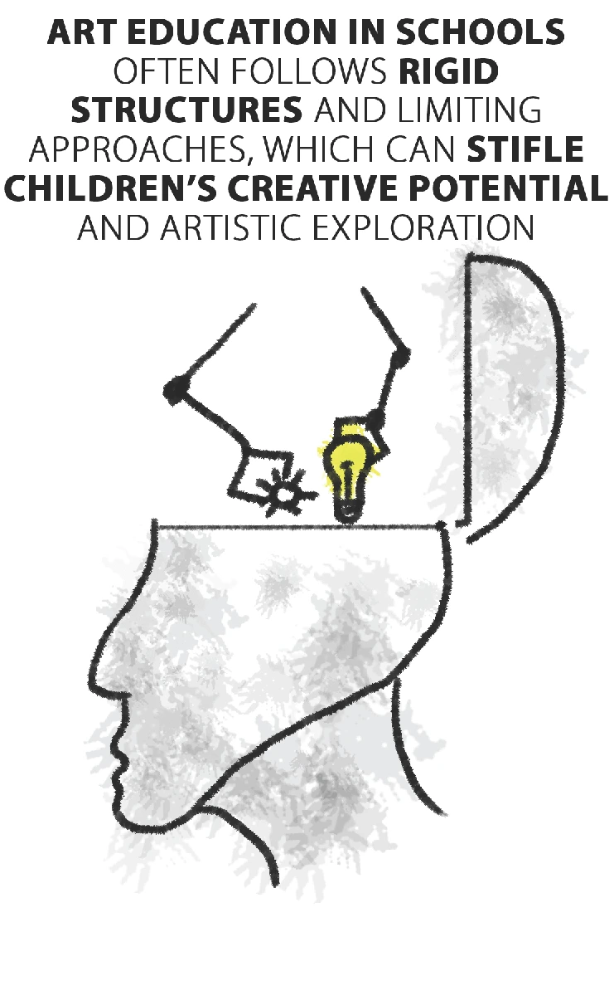
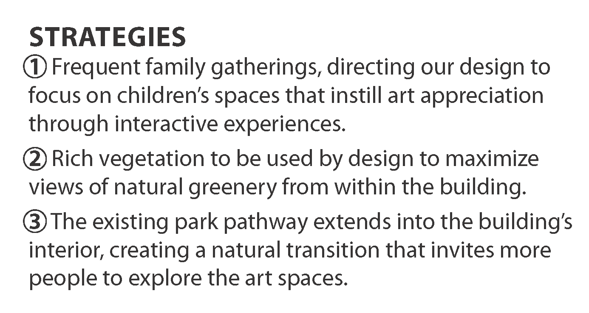
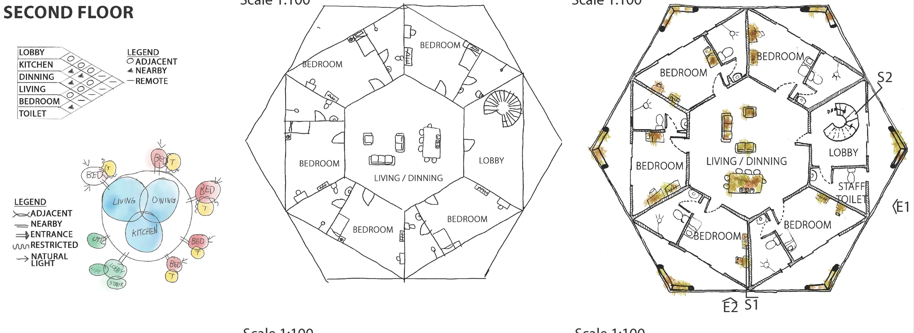
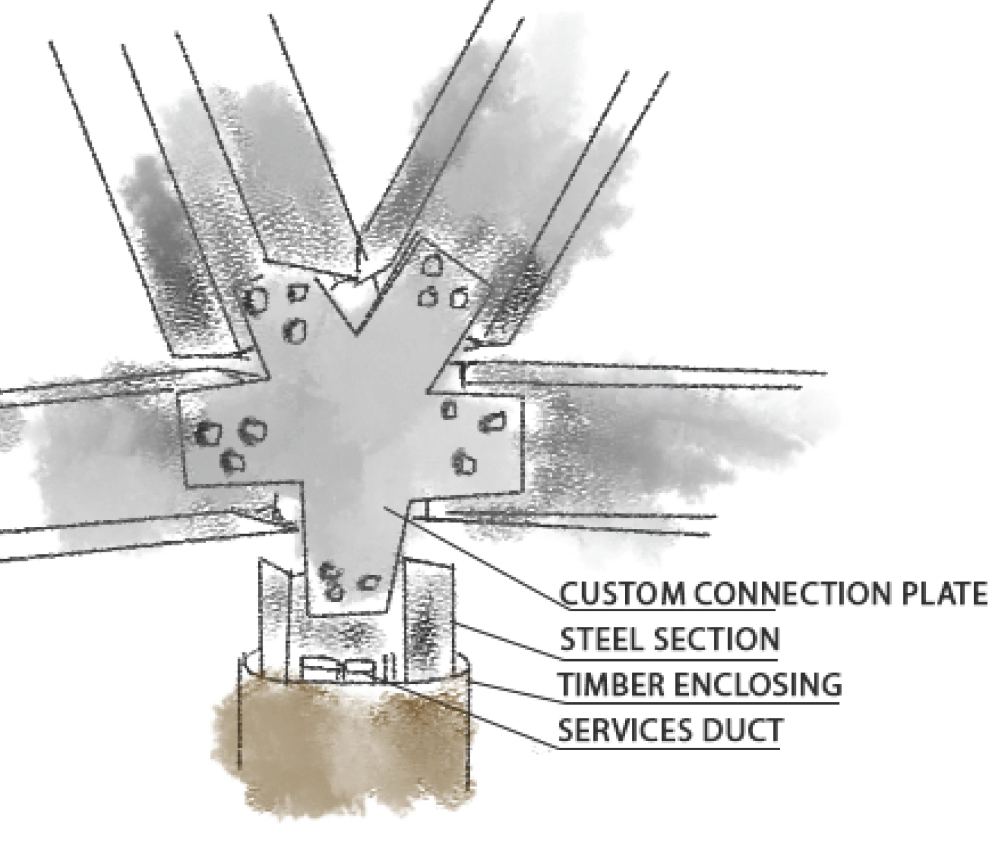
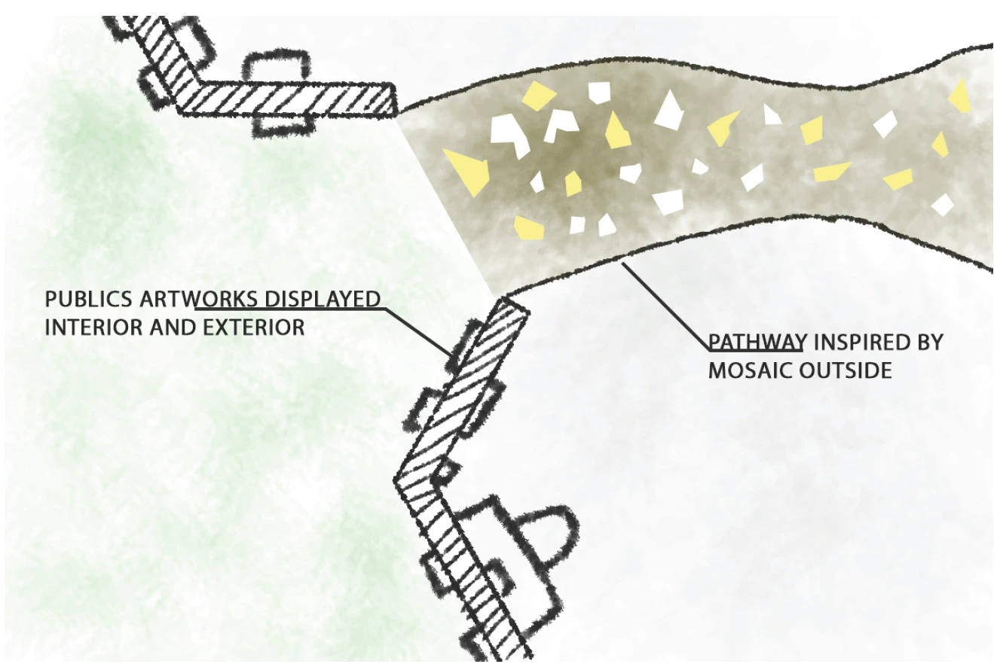
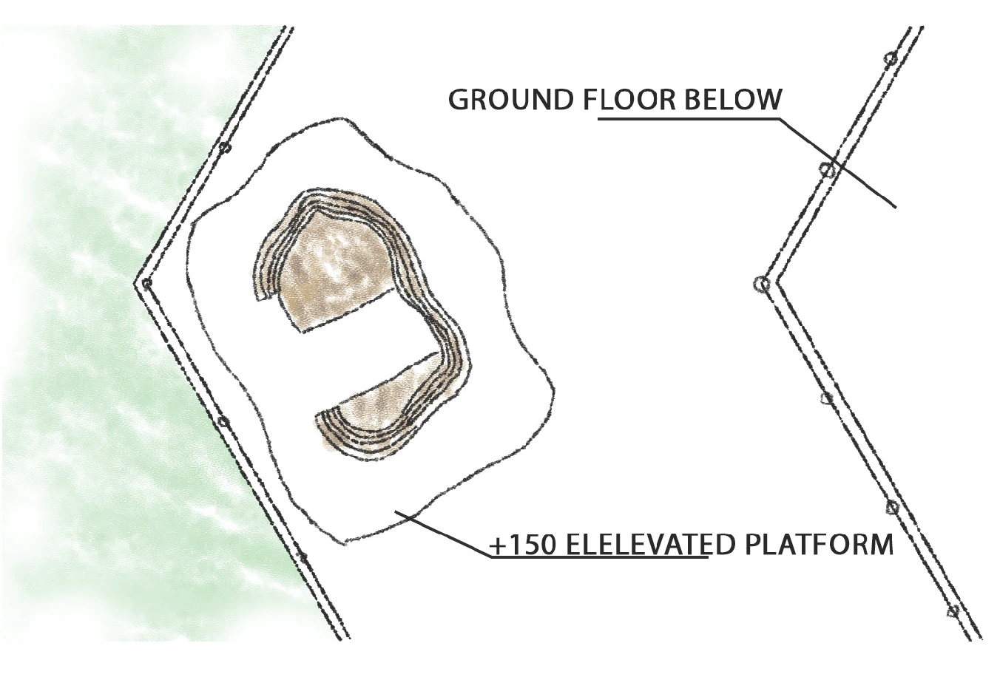

Semester 2 · Architectural Design II · 2024
Blue Canvas
Exploring the intersection of artistic practice and childhood play
- Programme
- Art space for artists and children
- Levels
- Three
- Method
- Ricci flow study


Introduction & Concept
The project explores the intersection of artistic practice and community engagement through a three-level structure that challenges traditional art education paradigms.
The building's form responds to its primary function: creating unrestricted spaces for artistic exploration while fostering natural interaction between practicing artists and the public, particularly children.
Named “Blue Canvas,” the design embodies the infinite nature of the sky - a reflection of how children's creativity, like the vast azure expanse above, knows no boundaries.
Problem Factor

Remedy

Statement
Fostering a nurturing and supportive environment where children can freely explore art, connect with nature, and gain authentic understanding of artistic practice and expression.
Conceptual Building Form
Early conceptual explorations for the main building's form, considering massing, program distribution, and experiential qualities.

Site Analysis & Strategy


Design Methodology: Ricci Flow Study
The "Ricci Flow" geometric process served as a key design methodology, explored as a foundational study for this project. This iterative technique for form generation (illustrated below) provided a framework for developing the organic and adaptable qualities of the main building's structure. The study focused on how such processes can yield evolving and responsive architectural spaces.


Programming & Parti

Floor Plans



Structural & Material Details


Detailed Views & Blow-ups


Sections & Elevations


The Model
Perspective Views